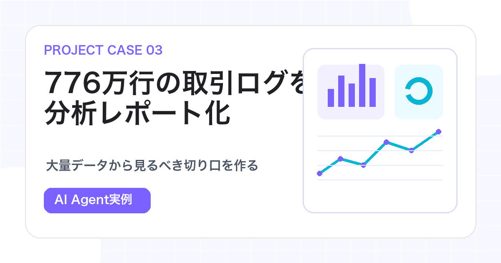

Case Study / Big Data × AI Agent
大量の取引ログを
AI Agentで分析レポート化した事例
約776万件の約定ログ、378ウォレット、467銘柄を対象に、AI Agentで集計、観察、仮説作成まで行った事例です。

この記事の立ち位置
この記事は投資助言、売買推奨、収益保証ではありません。過去ログから仮説を作る方法を紹介し、実際の売買ではなく検証工程を扱います。
データが大きいと、最初の問いを作るだけで難しい
大量のCSVやParquetログを前にすると、人間は「どこから見ればいいか」で止まりがちです。
ファイルはある。でも、何を見ればいいかわからない。どの列が大事なのか、どの単位で集計すべきか、どの結果が異常なのか。特に取引ログのようなデータでは、行数、銘柄、ウォレットの数が多く、目視で確認するのは現実的ではありません。
今回の対象は、2026年5月26日から6月14日までのログでした。
| 項目 | 規模 |
|---|---|
| 約定ログ | 7,763,317行 |
| ウォレット | 378 |
| 銘柄 | 467 |
この量では、人が一つずつ見るのではなく、Agentに「分析の道筋」を作らせる方が現実的です。
今回Agentに任せたこと
- 銘柄ごとの損益傾向を見る
- ウォレットごとの成績を見る
- OPEN後の1時間、4時間、24時間の動きを比較する
- 複数ウォレットが同じ時間帯に同じ方向へ動くクラスターを見る
- 単純な追随ではなく、条件付きの仮説に整理する
- 注意点と使い分けをレポート化する
実際のレポートでは、15分クラスター・ショート追随、選抜ウォレット4時間コピー、失敗ロング・フェードという3つの候補に整理しました。
大事なのは「この方法で取引しましょう」と言うことではありません。大量ログから、どのように観察し、どんな仮説を作り、どこに注意点を置くかを見せることです。
Agentは、分析のたたき台を作るのが得意
大量データ分析では、最初から完璧な結論を出す必要はありません。最初に必要なのは「見るべき切り口」です。
この取引ログを読み、まず全体像を整理してください。
見たいこと:
1. 行数、期間、銘柄数、ウォレット数
2. 銘柄ごとの損益傾向
3. ウォレットごとの成績上位と下位
4. OPEN後1時間、4時間、24時間の平均的な動き
5. 複数ウォレットが同じ時間帯に同じ方向へ動いたイベント
6. 仮説として検討できるパターン
7. この分析の限界と、人間が確認すべきこと
投資助言や取引実行ではなく、過去ログの分析レポートとしてまとめてください。この指示なら、Agentは「分析者の作業補助」として動きます。集計、比較、候補抽出、レポート作成はAgentに任せ、データの前提や外部環境、実際のリスクは人が確認します。
人間が確認する場所
- データ期間に偏りがないか
- ログ開始前からの保有ポジションが抜けていないか
- 未決済損益の推定方法は妥当か
- 手数料、スリッページ、流動性を見落としていないか
- 外れ値が平均を歪めていないか
- 実運用前に別期間で検証したか
さらに、同じ期間のデータでルール作成と成績評価をしていないか、ファンディングなどのコストを引いても期待値が残るか、378ウォレットから後付けで上位だけを選んでいないかも確認します。
良い結果だけでなく、Agentが見つけた仮説をどう疑い、どう次の検証へ回すかまで含めることで、実践的な教材になります。
この考え方は、業務ログにも使える
この事例は金融ログですが、同じ方法をECの売上ログ、広告クリック、問い合わせ履歴、営業活動、在庫変動、Webアクセスにも使えます。
- 全体の件数と期間を見る
- カテゴリごとに集計する
- 成績の良いもの、悪いものを分ける
- 時間軸で変化を見る
- 異常値や繰り返しパターンを探す
- 次に人が確認する候補を出す
まずは手元のCSVから試す
売上、問い合わせ、SNS反応など、手元のCSVを1つ用意します。最初は次の依頼だけで十分です。
このCSVを分析して、いきなり結論を出すのではなく、まず全体像を整理してください。
行数、期間、カテゴリ、上位、下位、異常値、次に見るべき切り口を出してください。
最後に、人間が確認すべき点も書いてください。これだけで、データの前に止まっていた状態から、「次に何を見るか」が見えるようになります。
Related Articles
画像整理と株価リサーチの事例も見る。
金融系Agentは、答えを出させるより、データ取得、観察、比較、検証ログ作成を任せる方が安全で再現しやすくなります。